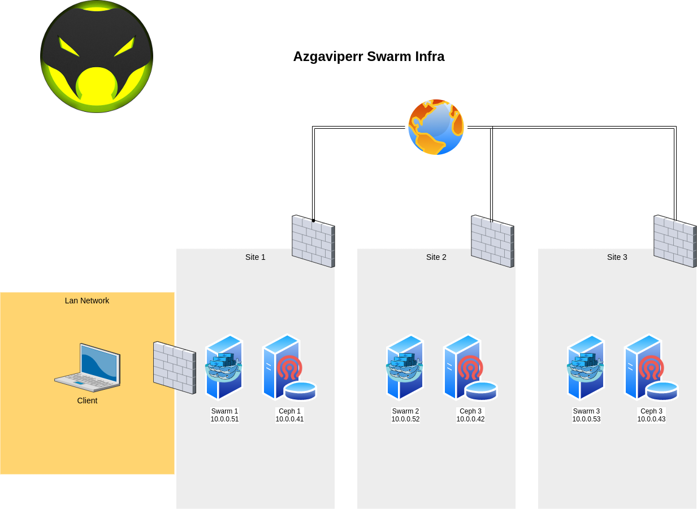

Docker the Zerg way#
For a resilient installation we are going to build a docker swarm of 3 master nodes with also a worker role. (In swarm node can be master or worker - the one running containers - or both)
It's important to understand the split brain concept. In the following cluster a quorum have to be kept to assure things don't go sideways. For the quorum to be achieve you should have 2 master nodes up. This is true for Swarm and Ceph.
Nodes gonna be called: swarm1, swarm2, swarm3, ceph1, ceph2, ceph3

Why Swarm ?
Swarm is an orchestration tool directly provided into docker from the version 1.12. It is easy to use compare to Kubernetes and easier to maintain for a small team.
- Highly-available (can tolerate the failure of a single component)
- Scalable (can add resource or capacity as required)
- Portable (run it on your home today, run it in everywhere tomorrow)
- Automated (requires minimal care and feeding)
Why Ceph ?
While Docker Swarm is great for keeping containers running and providing scaling capabilities, it does lack direct integration of persistent storage accross nodes. This means if you actually want your containers to keep any data persistent across restarts of services, you need to provide a shared storage to every docker nodes. This also means you shouldn't use docker volume declaration in you docker files.